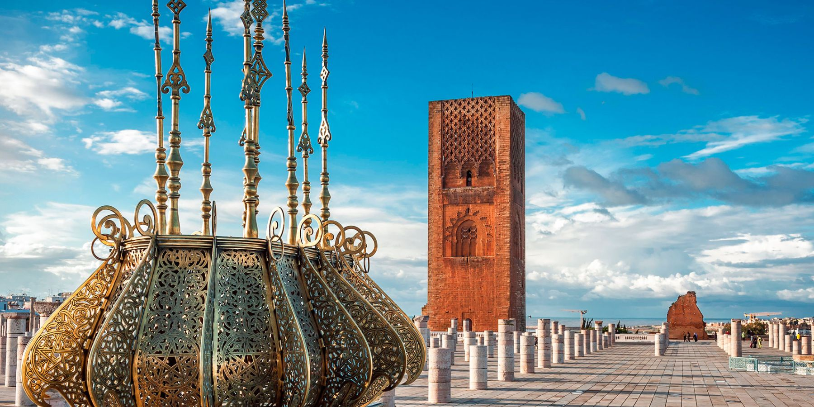

Docteurs à Rabat:
- Spécialité:Cardiologue
- Statut:Occupé
- Nombre de patients en salle d'attente:16
- Temps d'attente estimé:supérieur à 4h
- Adresse:Rue Soussa Ang. Av. My Slimane Résid. My Slimane Entr. C RABAT
- Téléphone:05 37 70 88 11
- Spécialité:Cardiologue
- Statut:Disponible
- Nombre de patients en salle d'attente:2
- Temps d'attente estimé:50min
- Adresse:9, Place Talha, Av Ibn Sina, 10080 RABAT
- Téléphone:05 37 77 90 90
- Spécialité:Cardiologue
- Statut:Occupé
- Nombre de patients en salle d'attente:12
- Temps d'attente estimé:300min (5h)
- Adresse:Rue Soussa ang.My Slimane, Résid. My Ismail entrée C, 10000 RABAT
- Téléphone:05 37 70 88 11
- Spécialité:Généraliste
- Statut:Disponible
- Nombre de patients en salle d'attente:4
- Temps d'attente estimé:100min (1h40min)
- Adresse:Quartier Amal 4, av. AlMostakbal n°10, 10140 RABAT
- Téléphone: 05 37 79 68 48
- Spécialité:Généraliste
- Statut:Disponible
- Nombre de patients en salle d'attente:8
- Temps d'attente estimé:200min (3h20min)
- Adresse:153, avenue Kifah (c.y.m.), bloc AOC, 10120 RABAT
- Téléphone:05 37 69 12 56
- Spécialité:Généraliste
- Statut:Indisponible
- Nombre de patients en salle d'attente:
- Temps d'attente estimé:
- Adresse: quartier Takadoum, bloc Zaitoun n°25, 10200 RABAT
- Téléphone:05 37 63 02 13
- Spécialité:Ophtalmologue
- Statut:Occupé
- Nombre de patients en salle d'attente:5
- Temps d'attente estimé:125min (2h05min)
- Adresse:rue d' Amman ang. rue Yougoslavie, résid. Minaret, 10000 RABAT
- Téléphone:05 37 70 67 11
- Spécialité:Ophtalmologue
- Statut:Disponible
- Nombre de patients en salle d'attente:2
- Temps d'attente estimé:50 min
- Adresse: 9,RueAnNador (Nador) , 10000 RABAT
- Téléphone:05 37 72 02 08
- Spécialité:Ophtalmologue
- Statut:Disponible
- Nombre de patients en salle d'attente:0/li>
- Temps d'attente estimé:0min
- Adresse:28,Avenue de France, 2°ét. Agdal, 10090 RABAT
- Téléphone: 05 37 77 19 77
- Spécialité:Pédiatre
- Statut:Occupé
- Nombre de patients en salle d'attente:15
- Temps d'attente estimé:(superieur à 4h)
- Adresse:Hy El Manzeh (c.y.m.), cplxe AlManal appt. n°6 RABAT
- Téléphone: 05 37 79 75 59
- Spécialité:Pédiatre
- Statut:Indisponible
- Nombre de patients en salle d'attente:
- Temps d'attente estimé:
- Adresse:70, Avenue Allal Ben Abdellah, 2°ét., 10000 RABAT
- Téléphone:05 37 70 79 53
- Spécialité:Pédiatre
- Statut:Disponible
- Nombre de patients en salle d'attente:7
- Temps d'attente estimé:175min(2h55min)
- Adresse:1, Rue Al Amir Abdelkader, Imm. Municipal, 10080 RABAT
- Téléphone:05 37 67 10 81